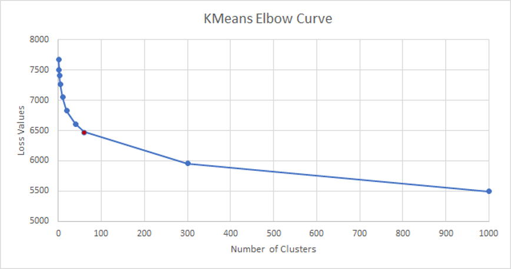
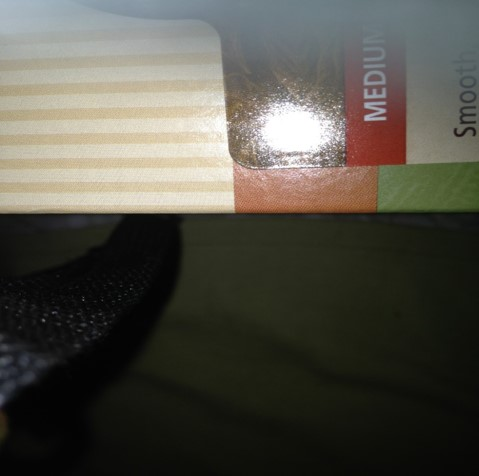
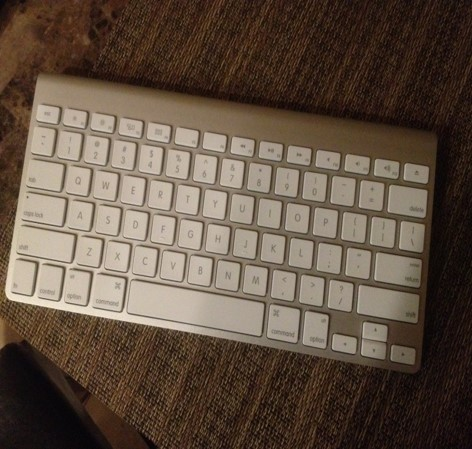

To resolve the visual challenges faced by the visually impaired people in their day-to-day lives, we present a Machine Learning model based on the Vizwiz dataset. The training dataset consists of photos taken by the blind people annotated with the question asked relevant to that image. Each annotation question also consists of answers and answer types specified by 10 people for each sample. This provides an opportunity as well a challenge to assist the visually impaired to help them in navigation, assisting their daily life tasks and answering their visual questions etc. The original Vizwiz dataset consisted of :
We use transfer learning to create feature vectors for the images present in the dataset. The activations from the last layer of different 3 pre-trained models like Inceptionv3, ResNet (Residual Network) and VGG16 (Very Deep Convolutional Networks for Large-Scale Image Recognition), which are state-of-the-art and are widely used. These models are pre-trained on ImageNet, which is a huge image dataset containing more than 14 million images. Hence, they can be used for our task to create feature vectors of the images considered for our task from the Vizwiz dataset.
We first ran the Inceptionv3 using CPU and GPU, with and without batching. The time taken for each of these operations are displayed in Table .
| CPU/GPU used | Time |
|---|---|
| CPU feature extraction time | 1 h 42 min |
| CPU feature extraction time | 43 min |
| Batching Sizes | Time |
|---|---|
| 4 | 8m 2s |
| 8 | 5m 9s |
| 16 | 5m 14s |
| 32 | 5m 11s |
| 64 | 5m 2s |
On closely examining the dataset, we observed that few images are totally blurred, few are black/white and few others just have too much flash. Hence we realised the need to clean the dataset before feeding it to our training pipeline.
The first challenge that we faced is how to identify the images to be discarded.
K-means clustering uses Euclidean distance as the metric to determine the similarity between different images. But some images might contain similar objects but they might be present in different orientations/positions/color contrasts, etc. Hence considering just the euclidean distance between the pixel values is not a good metric.
We used CNN to detect and classify the objects and accordingly performed the clustering on these CNN generated feature vectors. Each CNN layer performs optimized operations like centering the objects, gray-scale conversion(normalization), detecting the objects, and accordingly classifying and clustering the images.
The next challenge that we faced was to identify the correct value of K(number of clusters) to be generated.
To identify the accurate number of clusters to be considered, we calculated the loss values for a variety of distinct K values. We then plotted each of these values and used the Elbow method to determine the best value of K to be considered for our use case.
The following table depicts the loss values obtained for each value of k:
| Value of K (Number of Clusters) | Loss Value |
|---|---|
| 1 | 7674 |
| 2 | 7501 |
| 3 | 7411 |
| 5 | 7268 |
| 10 | 7051 |
| 20 | 6830 |
| 40 | 6612 |
| 60 | 6477 |
| 300 | 5957 |
| 1000 | 5494 |
The following is the elbow curve we generated based on the above values:
Hence, based on the elbow method, we obtained the accurate value of K as 60. Therefore, we generated 60 clusters. We then manually visited each of the clusters(i.e. each of the 60 folders of images), and discarded a few clusters to create a clean image dataset. In this way, the dataset was reduced from 20,523 image/question pairs to 13000 image/question pairs.
The following images show samples that were discarded:
The following images show samples that were included:
To overcome challenges 1,2 and 3 we ran K-means on feature vectors generated by a forward pass of a Convolutional Neural Network to generate 60 clusters, and out of those 60 clusters, we kept 29 clusters and discarded the rest based on the reasoning provided before, thus generating a dataset consisting of 13000 image/question pairs.
After generating 29 folders(clusters), we had to use only the images from these folders. To uniquely read images from 29 out of 60 folders, we wrote an annotation script.
The script reads the annotation json file, which consists of the following structure:
{
Image_name : “ “, // Image name
“Question: “ “, // The question associated with each image
“Answers” : {
// List of answers from 10 people
}
“Answer_type”:[ yes/no], [other], [unanswerable],
“Answerable” : 0/1
}
From this file, only those images will be considered that are present in the 29 clusters, and for those image names, we read questions and answers associated with them. All this data is then loaded into a new json file.
This new json file is then used for further processing.
We also experimented taking max pooling and average pooling post the convolution layers, the results of which are shared in Table.
| Value of K (Number of Clusters) | Loss Value |
|---|---|
| 1 | 7691 |
| 2 | 7508 |
| 3 | 7392 |
| 5 | 7226 |
| 10 | 6991 |
| 20 | 6747 |
| 40 | 6499 |
| 60 | 6356 |
| 300 | 5796 |
| 1000 | 5322 |
| Value of K (Number of Clusters) | Loss Value |
|---|---|
| 1 | 11171 |
| 2 | 10832 |
| 3 | 10630 |
| 5 | 10307 |
| 10 | 9913 |
| 20 | 9508 |
| 40 | 9046 |
| 60 | 8788 |
| 300 | 7813 |
| 1000 | 7029 |
| Value of K (Number of Clusters) | Loss Value |
|---|---|
| 1 | 114840986 |
| 2 | 10739880 |
| 3 | 105134892 |
| 5 | 102756470 |
| 10 | 99803204 |
| 20 | 96764906 |
| 40 | 93636811 |
| 60 | 91779277 |
| 300 | 84182650 |
| 1000 | 76288868 |
| Value of K (Number of Clusters) | Loss Value |
|---|---|
| 1 | 5165279 |
| 2 | 4968424 |
| 3 | 4867648 |
| 5 | 4738606 |
| 10 | 4554972 |
| 20 | 4392889 |
| 40 | 4207680 |
| 60 | 4094941 |
| 300 | 3667674 |
| 1000 | 3312151 |
| Value of K (Number of Clusters) | Loss Value |
|---|---|
| 1 | 2840 |
| 2 | 2218 |
| 3 | 2026 |
| 5 | 1855 |
| 10 | 1679 |
| 20 | 1537 |
| 40 | 1421 |
| 60 | 1361 |
| 300 | 1146 |
| 1000 | 960 |
We finally use Inceptionv3 with max-pooling and run it on GPU using 32-sized batches. K-Means is run on these image feature vectors and based on the loss values received, we selected this architecture.
After choosing the relevant clusters, the next task is to represent the training data to be fed into the neural network.
To generate BOW for questions, we have used the following steps:
Similar to Question text representation, we also need to model answer text. The unique thing about the Vizwiz dataset is that for each question, we have 10 answers that are annotated. So we have multiple ground truth labels for each question. We decided not to use One hot encoding because that would lead to very high dimensional label vectors, blowing up the feature space making the model suffer from the curse of dimensionality. Thus, we followed the following steps:
As discussed in the training pipeline, we have the image + question embedding for each of the (image, question) pairs. For image embeddings, we use the frozen parameters from the Inceptionv3 model learned on ImageNet classification, and no fine-tuning was performed. We concatenate the BOW questions and images (2048 + 3042), to get a resultant vector of dimension 5090. We use this combined input for the Multi-Layer Perceptron (MLP). MLP is a fully connected neural network classifier consisting of 3 hidden layers with 5090 hidden units. We use ReLU for activation, which is finally followed by a log softmax layer to obtain a probability distribution over the top K answers. Cross-entropy loss is used to compute loss for our model.